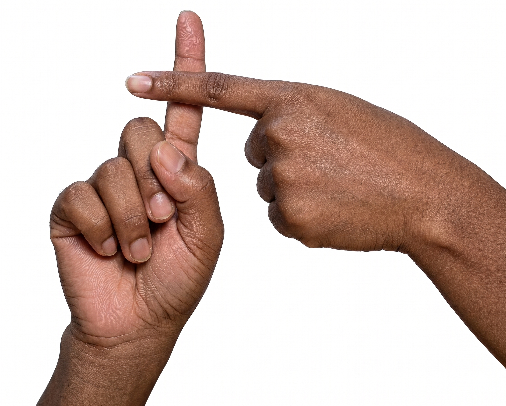
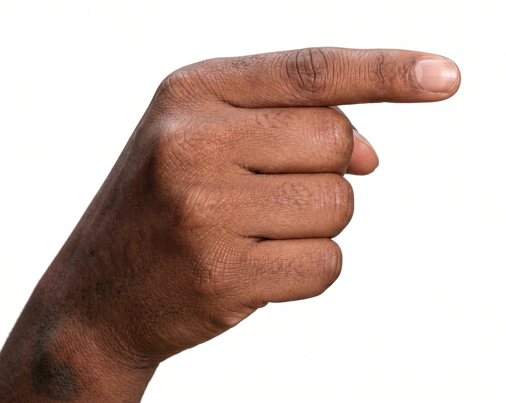
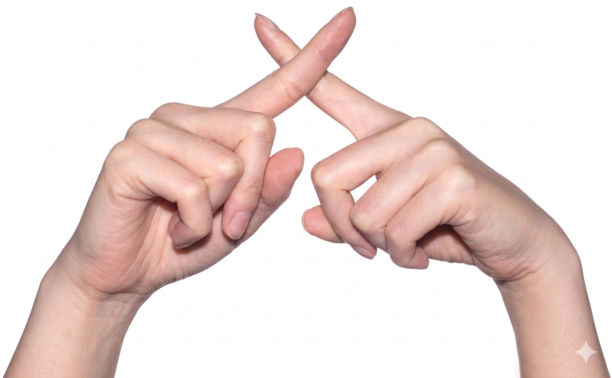
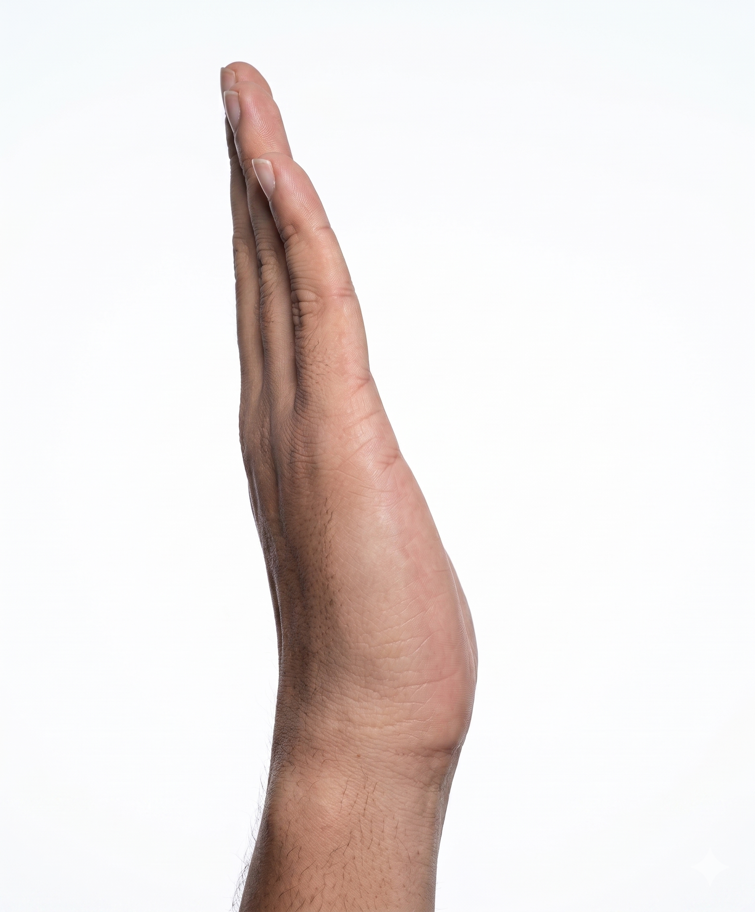
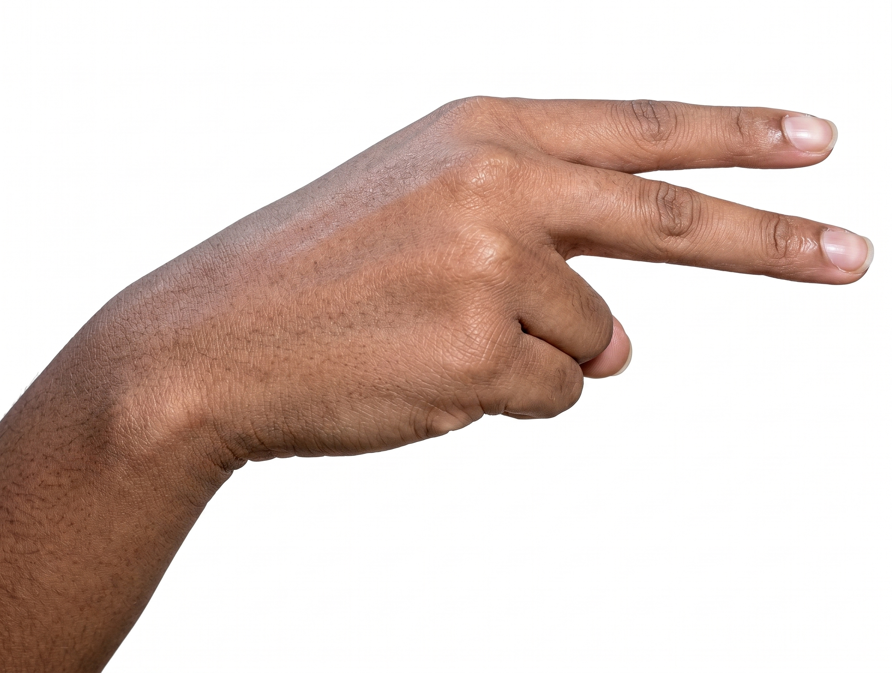
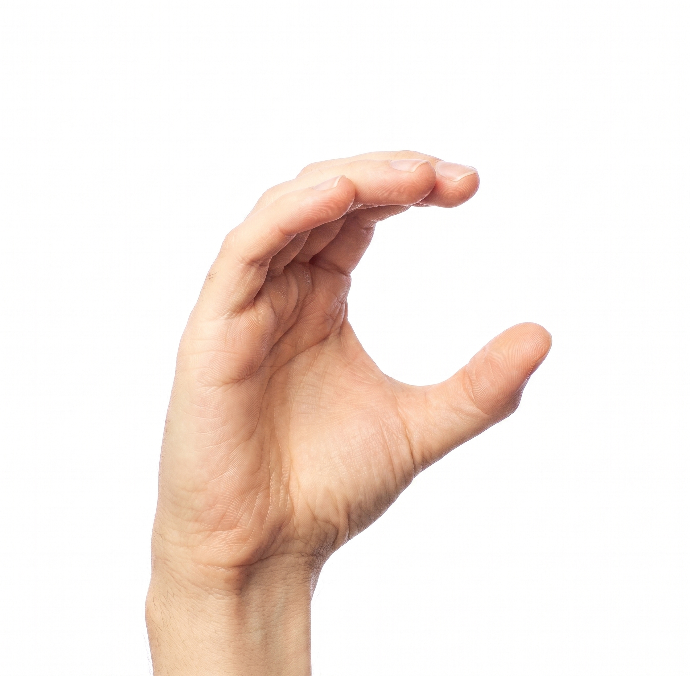
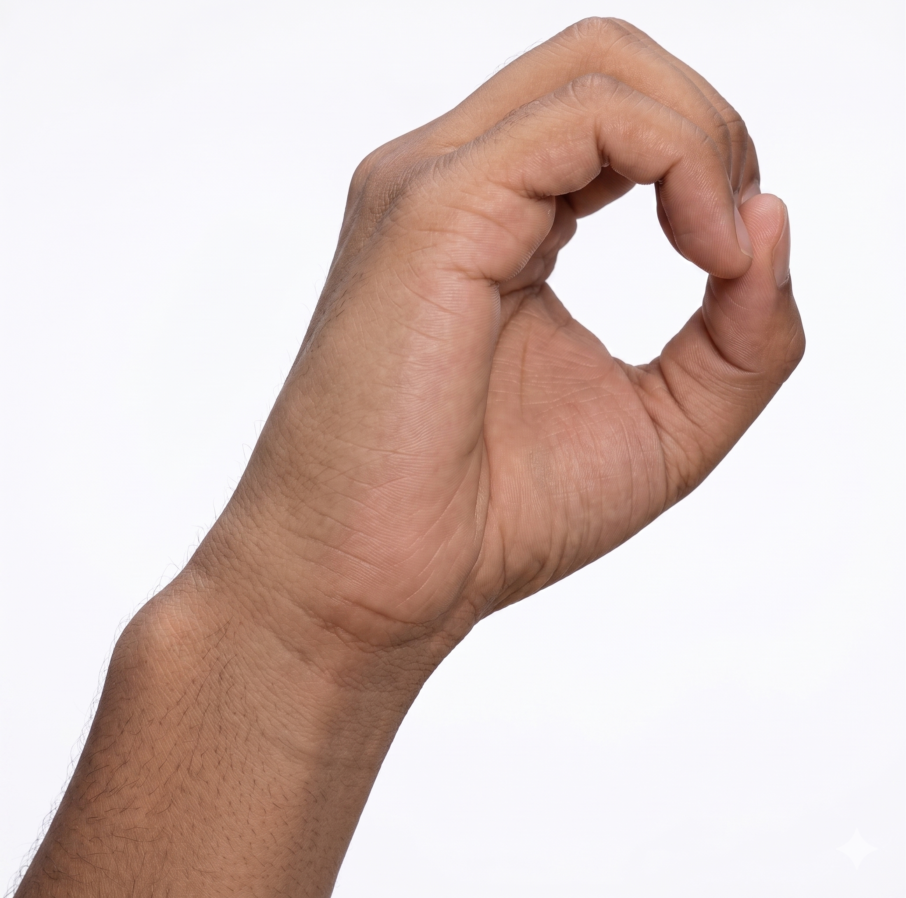

Add Hand Gesture Recognition in One Line of Code
A reusable, plug-and-play Python module extracting MediaPipe's power into a dead-simple API. Detect arithmetic gestures, finger counts, and custom actions instantly.
pip install mp-gesture-lib
from mp_gesture_lib import GestureDetector
import cv2
# 1. Initialize with bundled models
detector = GestureDetector()
cap = cv2.VideoCapture(0)
while cap.isOpened():
ok, frame = cap.read()
# 2. Detect gesture with one call
result = detector.detect(frame)
# 3. Use the result!
print(f"Detected: {result.gesture}")
print(f"Confidence: {result.confidence}")
cv2.imshow("Demo", result.annotated_frame)
if cv2.waitKey(1) == 27: breakWhy MP_Gesture_Lib?
Designed for developers who want to integrate computer vision without becoming CV experts.
Zero Configuration
No model paths required. Bundled models are auto-discovered and loaded instantly. Just import and go.
Multi-Model Hierarchy
Combines custom user ML models, bundled fallback models, and geometry-based rules into a single priority pipeline.
Rule-Based Fallbacks
Includes built-in geometry rules for advanced gestures (like "plus" and "multiply") and precise 1-10 finger counting.
Supported Gestures
The library detects standard numbers and arithmetic operations out-of-the-box.

Plus
Rule-based
Minus
ML Model
Multiply
Rule-based
Divide
ML Model
Equal
ML Model
Clear
ML Model
Zero (0)
ML ModelNumbers 1-10
Finger CountDetects extended fingers with direction-awareness.
Usage Examples
Flexible patterns for any integration scenario.
Uses the bundled auto-discovered models. Perfect for quick starts.
import cv2
from mp_gesture_lib import GestureDetector
# Automatically loads bundled models
detector = GestureDetector()
cap = cv2.VideoCapture(0)
while cap.isOpened():
ok, frame = cap.read()
result = detector.detect(frame)
# "plus" 1.0 / "3" 1.0 / "minus" 0.91
print(result.gesture, result.confidence)Load your own `.task` file. The custom model is queried first; bundled models act as a fallback.
from mp_gesture_lib import GestureDetector
detector = GestureDetector(
model_path="my_custom_gestures.task",
ml_threshold=0.80, # stricter confidence requirement
draw_landmarks=False, # faster, skips skeleton drawing
num_hands=2 # track up to 2 hands
)Working with PIL, torchvision, or other libraries that use RGB instead of OpenCV's default BGR format.
# Assuming 'rgb_frame' is a numpy array in RGB format
# (e.g., from PIL.Image or similar)
result = detector.detect(rgb_frame, input_is_rgb=True)
# The returned annotated_frame will ALSO be in RGB format
# matching the input format.API Reference
Clean, typed, and predictable interface.
GestureResult Dataclass
| Field | Type | Description |
|---|---|---|
gesture |
str | Gesture name (e.g. "plus", "3") or "unknown".
|
confidence |
float | 0.0–1.0 (1.0 for rule-based, model score for ML, 0.0 for unknown). |
raw_label |
str | Internal debug label (e.g. "ml:minus", "rule:plus"). |
annotated_frame |
np.ndarray | None | Input frame with hand skeleton drawn (if draw_landmarks=True). |